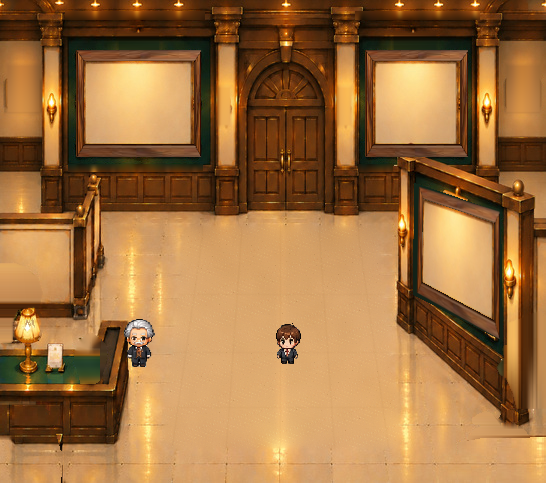
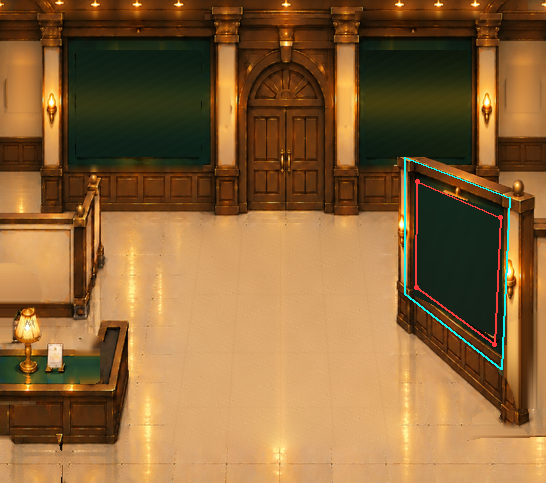

右手前の壁面に、額縁と台紙の角度を合わせました
背景画像の緑の展示壁から壁面四隅を計測して基準にしました。正面素材の木製・金縁・台紙・写真窓を、その壁面内で同じ変換により表示します。
木製／空き台紙／100%
前回v06と今回v07の比較

壁面を基準にした位置合わせ

水色は壁面の推定四隅、赤色はそこから自動計算した額縁の位置です。建築形状は修正していません。
壁面の四隅は原画の建築線から推定した座標であり、最終美術判断は未承認です。元の右手前の豪華な金額縁を画素単位で再現したものではありません。今回は正面素材由来の木・金・台紙・写真を一括で変形しています。登録写真の入力・変形関数は単体試験済みですが、ゲーム本体へはまだ統合していません。Lv.1に採用するかは未決定です。